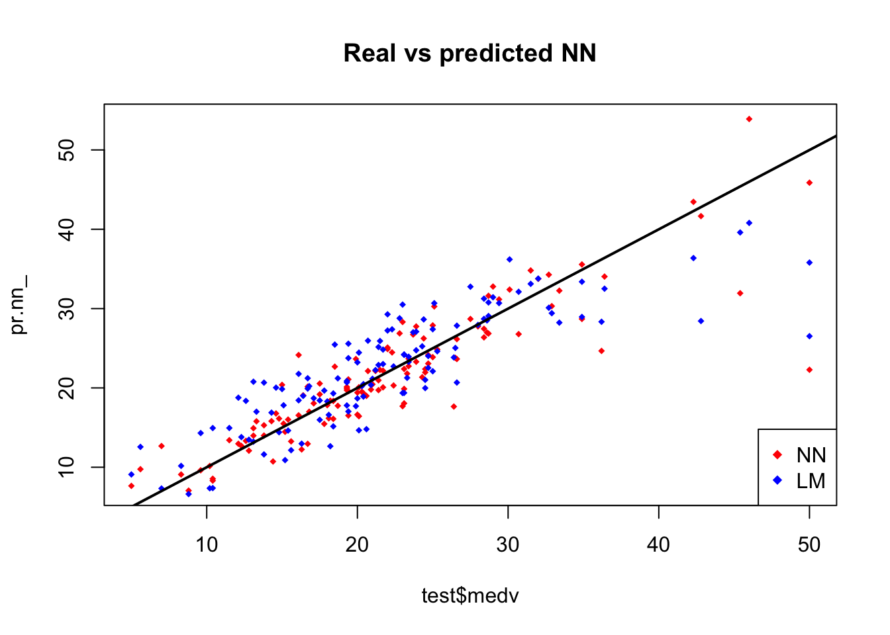
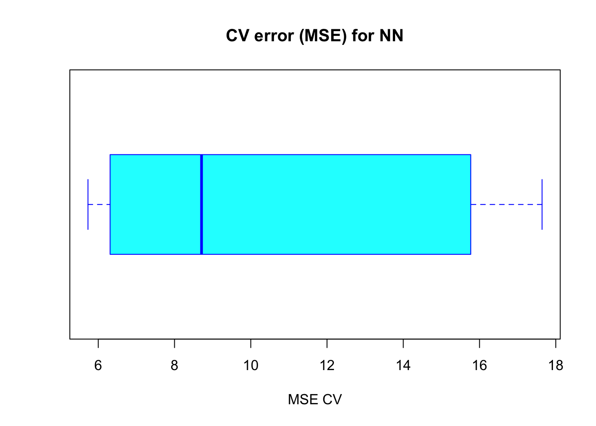
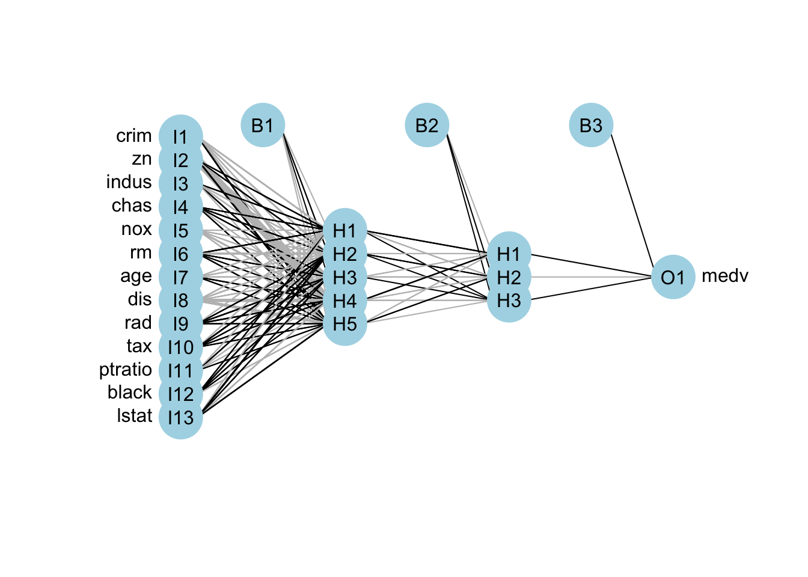
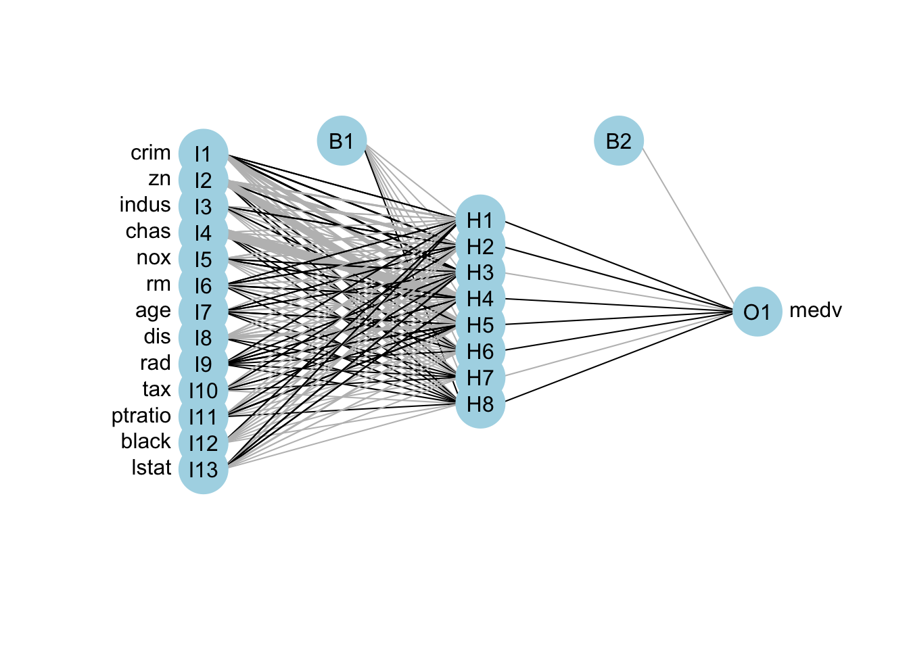

10 Introduccion a las redes neuronales artificiales
En esta sección describimos una clase de métodos de aprendizaje que se desarrollaron por separado en diferentes campos: estadística e inteligencia artificial basadas en modelos esencialmente idénticos.
Las redes neuronales artificiales se inspiran en el comportamiento conocido del cerebro humano (principalmente el referido a las neuronas y sus conexiones), trata de crear modelos artificiales que solucionen problemas difíciles de resolver mediante técnicas algorítmicas convencionales.
La idea central es extraer las combinaciones lineales de las variables de entrada como características derivadas y, a continuación, modelar el objetivo como una función no lineal de estas características. El resultado es un poderoso método de aprendizaje, con amplias aplicaciones en muchos campos.
la neurona artificial pretende mimetizar las características más importantes de la neurona biólogica. En general, recibe las señales de entrada de las neuronas v ecinas ponderadas por los pesos de las conexiones. La suma de estas señales ponderadas proporciona la entrada total o neta de la neurona y, mediante la aplicación de una función matemática - denominada función de salida - , sobre la entrada neta, se calcula un valor de salida, el cual es enviado a otras neuronas.
Estructura general de una neurona biológica.
Tanto los valores de entrada a la neurona como su salida pueden ser señales excitatorias (cuando el valor es positivo) o inhibitorias (cuando el valor es negativo).
Funcionamiento general de una neurona artificial.
10.1 Arquitecturas de las RNA
Las neuronas que componen una RNA se organizan de forma jerárquica formando capas. Una capa o nivel es un conjunto de neuronas cuyas entradas de información provienen de la misma fuente (que puede ser otra capa de neuronas) y cuyas salidas de información se dirigen al mismo destino (que puede ser otra capa de neuronas). En este sentido, se distinguen tres tipos de capas: la capa de entrada recibe la información del exterior; la o las capas ocultas son aquellas cuyas entradas y salidas se encuentran dentro del sistema y, por tanto, no tienen contacto con el exterior; por último, la capa de salida envía la respuesta de la red al exterior.
En función de la organización de las neuronas en la red formando capas o agrupaciones podemos encontrarnos con dos tipos de arquitecturas básicas: redes multicapa (multi-layer) y redes monocapa (single-layer).
10.2 Ejemplo: datos Boston housing
Vamos a utilizar el conjunto de datos de Boston en el paquete MASS. Recordemos que el conjunto de datos de Boston es una colección de datos sobre valores de vivienda en los suburbios de Boston. Nuestro objetivo es predecir el valor medio de las viviendas ocupadas por sus propietarios (`medv) utilizando todas las demás variables continuas disponibles.
set.seed(500)
library(MASS)
data <- BostonPrimero tenemos que comprobar que no hay datos faltantes, de lo contrario tenemos que arreglar el conjunto de datos.
apply(data,2,function(x) sum(is.na(x)))## crim zn indus chas nox rm age dis rad
## 0 0 0 0 0 0 0 0 0
## tax ptratio black lstat medv
## 0 0 0 0 0Hemos comprobado que no hay datos faltantes (NA). Procedemos dividiendo aleatoriamente los datos en un conjunto de entrenamiento y un conjunto de prueba, luego ajustamos un modelo de regresión lineal y lo probamos en el conjunto de prueba. Nótese que usamos la función glm() en lugar de la función lm() esto será útil más tarde al validar el modelo lineal.
index <- sample(1:nrow(data),round(0.75*nrow(data)))
train <- data[index,]
test <- data[-index,]
lm.fit <- glm(medv~., data=train)
summary(lm.fit)##
## Call:
## glm(formula = medv ~ ., data = train)
##
## Deviance Residuals:
## Min 1Q Median 3Q Max
## -14.9143 -2.8607 -0.5244 1.5242 25.0004
##
## Coefficients:
## Estimate Std. Error t value Pr(>|t|)
## (Intercept) 43.469681 6.099347 7.127 5.50e-12 ***
## crim -0.105439 0.057095 -1.847 0.065596 .
## zn 0.044347 0.015974 2.776 0.005782 **
## indus 0.024034 0.071107 0.338 0.735556
## chas 2.596028 1.089369 2.383 0.017679 *
## nox -22.336623 4.572254 -4.885 1.55e-06 ***
## rm 3.538957 0.472374 7.492 5.15e-13 ***
## age 0.016976 0.015088 1.125 0.261291
## dis -1.570970 0.235280 -6.677 9.07e-11 ***
## rad 0.400502 0.085475 4.686 3.94e-06 ***
## tax -0.015165 0.004599 -3.297 0.001072 **
## ptratio -1.147046 0.155702 -7.367 1.17e-12 ***
## black 0.010338 0.003077 3.360 0.000862 ***
## lstat -0.524957 0.056899 -9.226 < 2e-16 ***
## ---
## Signif. codes: 0 '***' 0.001 '**' 0.01 '*' 0.05 '.' 0.1 ' ' 1
##
## (Dispersion parameter for gaussian family taken to be 23.26491)
##
## Null deviance: 33642 on 379 degrees of freedom
## Residual deviance: 8515 on 366 degrees of freedom
## AIC: 2290
##
## Number of Fisher Scoring iterations: 2 pr.lm <- predict(lm.fit,test)
MSE.lm <- sum((pr.lm - test$medv)^2)/nrow(test)La función sample(x,size) simplemente produce un vector del tamaño especificado de muestras seleccionadas aleatoriamente desde el vector x. Por defecto el muestreo es sin reemplazo: el índice es esencialmente un vector aleatorio de muestras.
Como se trata de un problema de regresión, vamos a utilizar el error cuadrático medio (ECM) como medida de lo lejos que están nuestras predicciones de los datos reales.
10.3 Ajuste de la red neuronal
Antes de entrenar una red neural, es necesario hacer algún paso previo. Como primer paso, vamos a abordar el preprocesamiento de datos.
Es una buena práctica normalizar los datos antes de entrenar una red neuronal.
Se pueden elegir diferentes métodos para escalar los datos (normalización-z, escala min-max, etc…).
Elegiremos el método min-max y escalaremos los datos en el intervalo \([0,1]\). Por lo general, la escala en los intervalos \([0,1]\) ó \([-1,1]\) tiende a dar mejores resultados.
Por lo tanto, escalamos y dividimos los datos antes de seguir adelante:
maxs <- apply(data, 2, max)
mins <- apply(data, 2, min)
scaled <- as.data.frame(scale(data, center = mins, scale = maxs - mins))
train_ <- scaled[index,]
test_ <- scaled[-index,]No hay una regla fija en cuanto a cuántas capas y neuronas usar, aunque hay varias reglas generales más o menos aceptadas. Normalmente, si es necesario, una capa oculta es suficiente para un gran número de aplicaciones.
En cuanto al número de neuronas, debería estar entre el tamaño de la capa de entrada y el tamaño de la capa de salida, normalmente 2/3 del tamaño de entrada. No hay garantía de que ninguna de estas reglas se ajuste mejor a su modelo de modo que es recomendable probar con diferentes combinaciones.
Para este ejemplo, vamos a usar 2 capas ocultas con esta configuración: 13:5:3:1.
La capa de entrada tiene 13 entradas,
las dos capas ocultas tienen 5 y 3 neuronas y
la capa de salida tiene, por supuesto, una sola salida ya que estamos haciendo regresión.
Vamos a entrar en la red:
library(neuralnet)
n <- names(train_)
f <- as.formula(paste("medv ~", paste(n[!n %in% "medv"], collapse = " + ")))
nn <- neuralnet(f,data=train_,hidden=c(5,3),linear.output=TRUE)Nota:
La expresión
y~.no es aceptada por la funciónneuralnet().El argumento oculto acepta un vector con el número de neuronas para cada capa oculta, mientras que el argumento
linear.outputse usa para especificar si queremos hacer una regresiónlinear.output=TRUEo clasificaciónlinear.output=FALSE.
La librería neuralnet proporciona una buena herramienta para representar gráficamente el modelo con los pesos en cada conexión:
plot(nn)Las líneas negras muestran las conexiones entre cada capa y los pesos de cada conexión, mientras que las líneas azules muestran el término de sesgo añadido en cada paso. El sesgo puede ser pensado como el intercepto de un modelo lineal.
La red neuronal es esencialmente una caja negra, por lo que no podemos decir mucho sobre el ajuste, los pesos y el modelo. Basta decir que el algoritmo de entrenamiento ha convergido y por lo tanto el modelo está listo para ser utilizado.
10.4 Predicción con una red neuronal
Ahora podemos tratar de predecir los valores para el equipo de prueba y calcular el ECM. Recuerda que la red producirá una predicción normalizada, por lo que necesitamos reducirla para hacer una comparación significativa (o simplemente una predicción simple).
library(neuralnet)
pr.nn <- neuralnet::compute(nn,test_[,1:13])
pr.nn_ <- pr.nn$net.result*(max(data$medv)-min(data$medv))+min(data$medv)
test.r <- (test_$medv)*(max(data$medv)-min(data$medv))+min(data$medv)
MSE.nn <- sum((test.r - pr.nn_)^2)/nrow(test_)
MSE.nn## [1] 15.75184Podemos ahora comparar los dos ECM:
print(paste(MSE.lm,MSE.nn))## [1] "21.6297593507225 15.7518370200153"Aparentemente la red neuronal está haciendo un mejor trabajo que el modelo lineal en la predicción de medv. Una vez más, hay que tener cuidado porque este resultado depende de la división de prueba de entrenamiento realizada anteriormente.
A continuación, vamos a realizar una rápida validación cruzada para tener más confianza en los resultados.
par(mfrow=c(1,2))
plot(test$medv,pr.nn_,col='red',main='Real vs predicted NN',pch=18,cex=0.7)
abline(0,1,lwd=2)
legend('bottomright',legend='NN',pch=18,col='red')
plot(test$medv,pr.lm,col='blue',main='Real vs predicted lm',pch=18, cex=0.7)
abline(0,1,lwd=2)
legend('bottomright',legend='LM',pch=18,col='blue', cex=.95)
Inspeccionando visualmente podemos ver que las predicciones hechas por la red neural están (en general) más concentradas alrededor de la línea (una alineación perfecta con la línea indicaría un ECM de 0 y por lo tanto una predicción perfecta ideal) que las hechas por el modelo lineal.
plot(test$medv,pr.nn_,col='red',main='Real vs predicted NN',pch=18,cex=0.7)
points(test$medv,pr.lm,col='blue',pch=18,cex=0.7)
abline(0,1,lwd=2)
legend('bottomright',legend=c('NN','LM'),pch=18,col=c('red','blue'))
10.5 Evaluando la predicción mediante validación cruzada
La validación cruzada es otro paso muy importante en la construcción de modelos predictivos. Aunque existen diferentes tipos de métodos de validación cruzada, la idea básica es repetir el proceso siguiente varias veces:
División Entrenamiento-Prueba:
- Realizar la división entre muestra de entrenamiento-prueba.
- Ajustar el modelos al conjunto de entrenamiento.
- Comprobar el modelo en el conjunto de prueba.
- Calcular el error de predicción.
- Repetir el proceso \(K\) veces.
Luego, calculando el error promedio, podemos hacernos una idea de cómo le está yendo al modelo.
Vamos a implementar una validación cruzada usando un bucle para la red neuronal y la función cv.glm() en el paquete boot para el modelo lineal. Para \(K=10\).
library(boot)
set.seed(200)
lm.fit <- glm(medv~.,data=data)
cv.glm(data,lm.fit,K=10)$delta[1]## [1] 23.8356set.seed(450)
cv.error <- NULL
k <- 10
for(i in 1:k){
index <- sample(1:nrow(data),round(0.9*nrow(data)))
train.cv <- scaled[index,]
test.cv <- scaled[-index,]
nn <- neuralnet(f,data=train.cv,hidden=c(5,2),linear.output=T)
pr.nn <- neuralnet::compute(nn,test.cv[,1:13])
pr.nn <- pr.nn$net.result*(max(data$medv)-min(data$medv))+min(data$medv)
test.cv.r <- (test.cv$medv)*(max(data$medv)-min(data$medv))+min(data$medv)
cv.error[i] <- sum((test.cv.r - pr.nn)^2)/nrow(test.cv)
}Calculamos el ECM promedio y graficamos los resultados como una gráfica de caja.
mean(cv.error)## [1] 10.32698cv.error## [1] 17.640653 6.310575 15.769519 5.730131 10.520947 6.121161 6.389967
## [8] 8.004786 17.369282 9.412778Boxplot
boxplot(cv.error,xlab='MSE CV',col='cyan',
border='blue',names='CV error (MSE)',
main='CV error (MSE) for NN',horizontal=TRUE)
Como se puede ver, la media del ECM de la red neural (10.33) es inferior al del modelo lineal, aunque parece haber cierto grado de variación en laos ECMs de la validación cruzada. Esto puede depender de la división de los datos o de la inicialización aleatoria de los pesos en la red neuronal. Al ejecutar la simulación en diferentes momentos con diferentes semillas, puede obtener una estimación puntual más precisa para el ECM medio.
10.5.1 Comparación de modelos RNA
A continuación vamos a comparar 2 modelos:
- 2 capas ocultas de 5 y 3.
- 1 capa oculta de 8
Boston.nn.5.3 <- neuralnet(f
, data=train_
, hidden=c(5,3)
, linear.output=TRUE)
Boston.nn.8 <- neuralnet(f
, data=train_
, hidden=8
, linear.output=TRUE)Como alternativa a la función plot.nn(), la librería NeuralNetTools incluye funciones gráficas más elegantes. Este elegante gráfico resuelve el problema del desorden visual utilizando el grosor de la línea para representar la magnitud del peso y el color de la línea para representar el signo de peso (negro = positivo, gris = negativo).
library(NeuralNetTools)
plotnet(Boston.nn.5.3)
plotnet(Boston.nn.8)